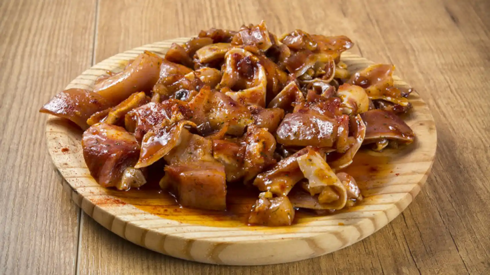

-
Entrantes
Patatas Bravas
Las Patatas Bravas son un plato clásico de la cocina española que consiste en dados de patatas fritas acompañadas de salsa brava (picante)Es un aperitivo popular en bares y restaurantes, y en Bar Paquiña se sirven con patatas crujientes y salsas caseras.

Patatas Alioli
Las Patatas Bravas son un plato clásico de la cocina española que consiste en dados de patatas fritas acompañadas de salsa alioli (cremosa de ajo). Es un aperitivo popular en bares y restaurantes, y en Bar Paquiña se sirven con patatas crujientes y salsas caseras.
Croquetas de Jamón
Las croquetas de jamón son un plato clásico español, consistente en una masa cremosa de bechamel mezclada con jamón serrano picado, moldeada en croquetas, rebozadas y fritas hasta que quedan doradas y crujientes por fuera y suaves por dentro. Este plato es muy popular en Bar Paquiña, donde se prepara con ingredientes frescos y de alta calidad para ofrecer una experiencia culinaria deliciosa y reconfortante.

Oreja a la Plancha
La oreja a la plancha es un plato tradicional de la gastronomía española que consiste en oreja de cerdo cocida y luego a la plancha hasta que adquiere una textura crujiente por fuera y tierna por dentro. Es una tapa muy popular en bares y restaurantes españoles, a menudo sazonada con sal y servida con limón para realzar su sabor. En Bar Paquiña, se prepara con esmero para ofrecer a los comensales una experiencia auténtica y deliciosa de la cocina española.
Pulpo a la Gallega
El pulpo a la gallega es un plato típico de la región de Galicia en España. Consiste en pulpo cocido en agua con sal y luego cortado en rodajas, que se sirven sobre una base de patatas cocidas y aliñadas con aceite de oliva, sal gruesa y pimentón dulce. Es una especialidad muy apreciada por su sabor y textura tierna. En Bar Paquiña, se prepara de manera tradicional, destacando los sabores auténticos de este plato gallego.

-
Carnes
Entrecot a la Plancha
El entrecot a la plancha es un plato clásico de la cocina española que consiste en un corte de carne de entrecot de ternera cocido a la plancha hasta que adquiere un exterior dorado y crujiente, mientras que se mantiene jugoso y tierno por dentro. Es un plato muy apreciado por su sabor y jugosidad, y suele servirse acompañado de guarniciones como patatas fritas, ensalada o verduras asadas. En Bar Paquiña, se prepara con maestría, asegurando que cada bocado sea una experiencia deliciosa y satisfactoria para los comensales.
Carrilladas en Salsa
Las carrilladas en salsa son un plato tradicional de la cocina española que consiste en carrilleras de cerdo o ternera estofadas lentamente en una salsa aromática. Las carrilladas son cortes de carne muy tiernos y jugosos, provenientes de las mejillas del animal. Para preparar este plato, las carrilladas se cocinan a fuego lento en una salsa elaborada con ingredientes como cebolla, zanahoria, vino tinto, caldo de carne y especias, hasta que la carne queda suave y se deshace en la boca. Es un plato reconfortante y lleno de sabor que se sirve comúnmente como plato principal en la gastronomía española. En Bar Paquiña, las carrilladas en salsa se preparan con esmero para ofrecer a los comensales una experiencia culinaria auténtica y deliciosa.

Secreto de Cerdo a la Brasa
El secreto de cerdo a la brasa es un plato típico de la cocina española que destaca por su sabor y jugosidad. Se elabora a partir de un corte específico de cerdo llamado "secreto", que proviene de la zona cercana a la paleta del animal. La carne se adoba con especias y se cocina a la brasa, lo que le confiere un exterior dorado y crujiente, mientras que se mantiene tierna y jugosa por dentro. Es un plato muy apreciado por los amantes de la carne asada, y se suele servir acompañado de guarniciones como patatas asadas o verduras a la parrilla. En Bar Paquiña, el secreto de cerdo a la brasa se prepara con maestría, garantizando un sabor auténtico y una textura perfecta en cada bocado.
Solomillo de Cerdo al Pedro Ximenez
El solomillo de cerdo al Pedro Ximénez es un plato de la cocina española que destaca por su combinación de sabores dulces y salados. Se prepara utilizando solomillo de cerdo cocinado lentamente en una salsa elaborada con vino Pedro Ximénez, un vino dulce típico de España, junto con otros ingredientes como cebolla, ajo y especias. La salsa se reduce hasta obtener una textura espesa y aterciopelada que impregna la carne con un sabor rico y aromático. El solomillo se sirve generalmente acompañado de patatas o arroz para completar el plato. En Bar Paquiña, este plato se prepara con atención al detalle, asegurando que cada bocado sea una delicia para el paladar.

-
Pescados
-
Atun Encebollado
El atún encebollado es un plato típico de la cocina española que destaca por su sabor y simplicidad. Consiste en filetes de atún fresco cocinados con cebollas en rodajas finas y pochadas lentamente en aceite de oliva, junto con tomate, ajo, laurel y otras especias al gusto. El resultado es un plato sabroso y reconfortante, donde el atún se impregna del dulzor de las cebollas y el aroma de las especias. Se suele servir caliente y acompañado de pan o arroz. En Bar Paquiña, el atún encebollado se prepara con ingredientes frescos y de calidad, ofreciendo a los comensales una experiencia culinaria auténtica y deliciosa.
-
Salmón Ahumado con Salsa de Mostaza y Eneldo en Pan de Centeno
El Salmón Ahumado con Salsa de Mostaza y Eneldo en Pan de Centeno es una deliciosa y elegante combinación de sabores. Consiste en finas lonchas de salmón ahumado, servidas sobre rebanadas de pan de centeno y acompañadas de una salsa cremosa de mostaza y eneldo. La mostaza aporta un sabor ligeramente picante y la frescura del eneldo complementa perfectamente el sabor del salmón. Es un plato popular como entrante o aperitivo en ocasiones especiales. En Bar Paquiña, se prepara con atención al detalle para ofrecer a los comensales una experiencia culinaria memorable y sofisticada.
-